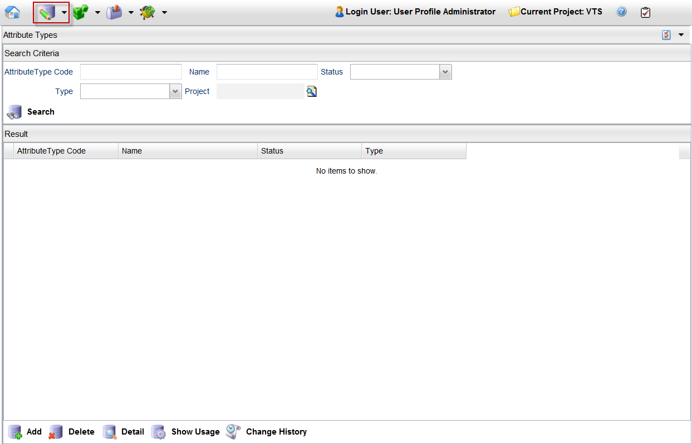

Attribute TypesAn attribute type defines a basic element or characteristic of any component or any product. An attribute is comparable to a data type in Velocity Studio. Attributes are used in catalog items, info models, association types, and order context information. Each attribute is defined by a data type, such as string, number, date, boolean, and code table. In addition, an attribute is also defined by length and by precision. Attributes do not support versioning and can have a default value. The following are examples of attribute types:
A catalog with a limited attribute types is a well-designed catalog. For example, a large catalog installation with tens of thousands of items is well-designed if the attribute types are in the low hundreds. Click the Attribute Types option from the Catalog Designer menu to bring up the Attribute Types - Search Criteria page.  You can perform the following actions with an attribute type: |